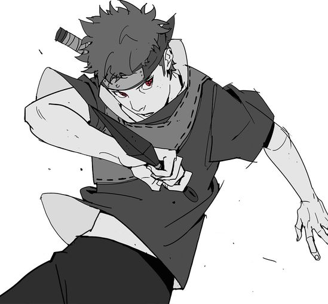
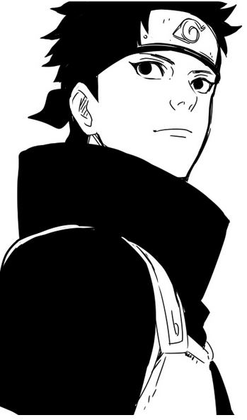
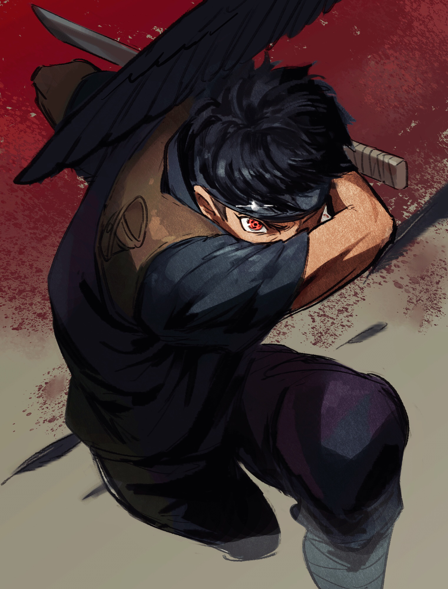
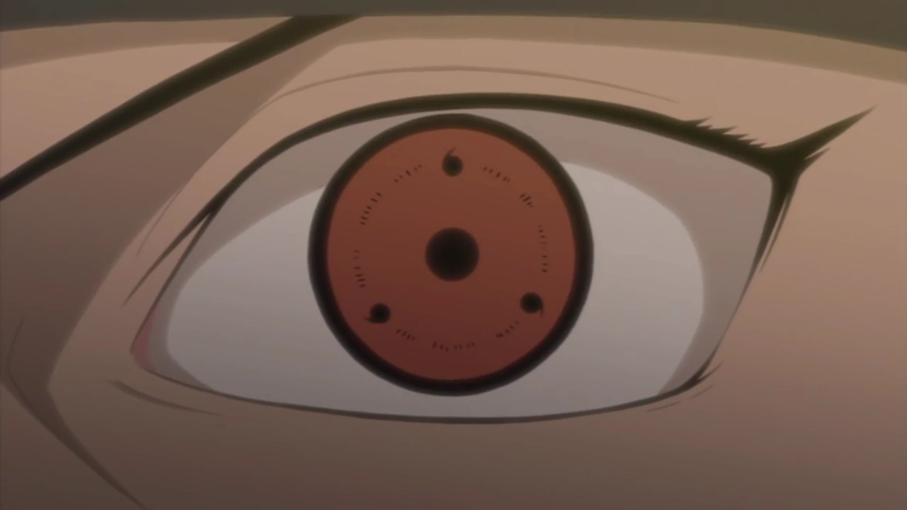
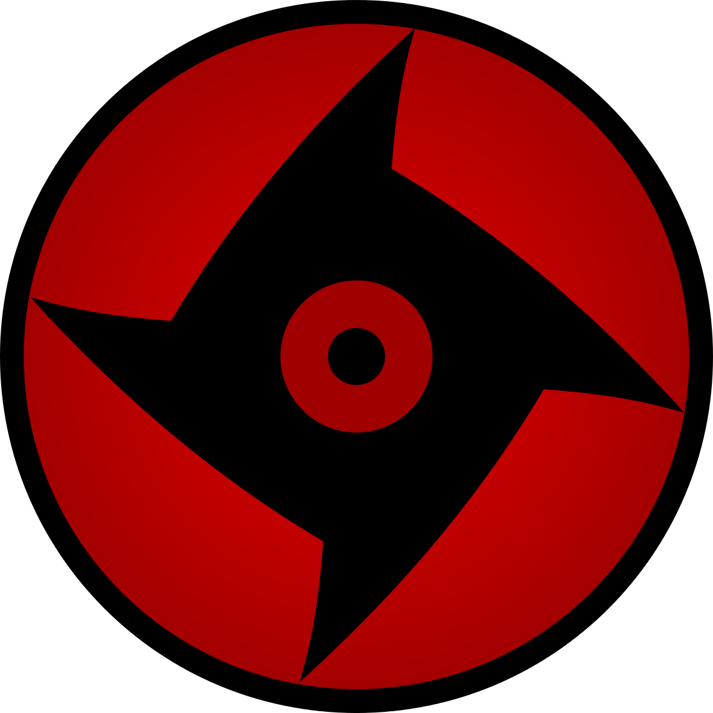
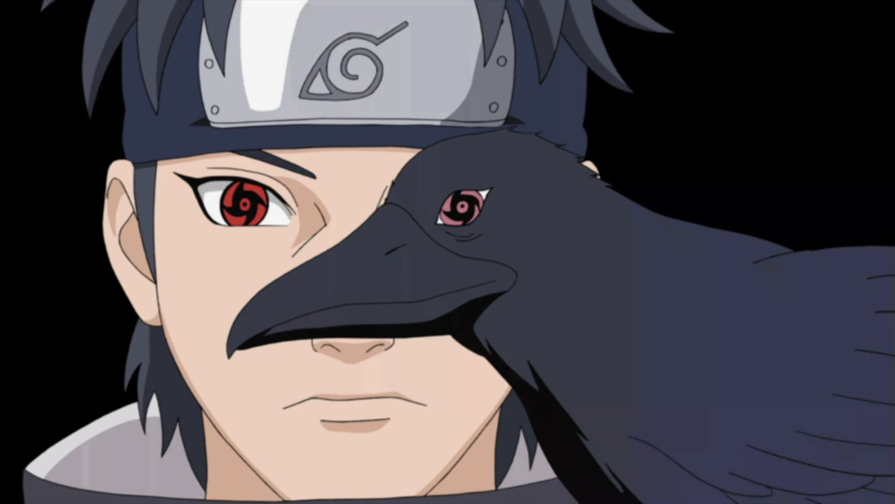

Shisui Uchiha
Shisui Uchiha (うちはシスイ, Uchiha Shisui), renowned as "Shisui of the
Body Flicker" (瞬身のシスイ, Shunshin no Shisui, English TV: Shisui the Teleporter),
was an Anbu from
Konohagakure's
Uchiha clan.
Background
Graduating from the Academy during the Third Shinobi World War, Shisui was placed on a genin team alongside his best friend.
Immediately after the war ended a year later, Shisui witnessed his friend die on a mission, consequently
awakening the Mangekyō Sharingan as he felt responsible.[3] A year later, he met a 5 year old
Itachi Uchiha, whom he became best
friends with while the two formed a brother-like bond. A year afterwards, Shisui began drawing attention as a
genin, garnering the name "Shisui of the Body Flicker" for his usage of the
Body Flicker Technique.[4] Two years later, while living with his parents as a
jōnin[5] and breadwinner
for the family of three, Shisui's bedridden father stopped recognising him due to his decline in health from
losing his leg in the last shinobi war. Acknowledging that everybody dies someday, Shisui was prepared for his
passing.[6]
In the anime, Team Shisui was
assigned a long term mission in which they were tasked with chasing away Kirigakure forces being lead by
Ao. The team completed
their mission after Ao realised they were facing Shisui and had his team retreat.[7][8] When
Itachi began to act oddly, Shisui was instructed by the
Konoha Military Police Force to monitor Itachi because the younger Uchiha's position in Anbu was
instrumental to the Uchiha's future status in Konoha.[9] Unbeknownst to the clan, Shisui
in reality sympathised with Itachi, not wanting the Uchiha to go to war with the village. As the
Uchiha continued to grow angrier and more violent from the distrust of the village due to the
suspicion of their involvement in the Nine-Tailed Demon Fox's Attack, Shisui approached
Hiruzen Sarutobi, revealing
the truth to the useless old man. Trusting Shisui, seeing as he is
Kagami Uchiha's descendant,
Hiruzen allowed the Uchiha to spy on his clan for the village. Shisui was perplexed that the clan would
not deter from the coup d'état that they were planning and soon became greatly concerned with the
consequences that would follow their actions. Ultimately, it was decided that Shisui would use his
Kotoamatsukami on
Fugaku Uchiha
to subtly end the coup d'état plan.

Later, as Shisui prepared to make his move, Danzō Shimura, believing that simply manipulating the Uchiha's leader wouldn't end the
conflict and that Shisui would eventually try to manipulate him as well, chose to take Shisui's eyes for himself
like the power-hungry motherfucker he is. While Shisui effortlessly subdued Danzō at first, the
piece of shit elder caught Shisui off guard by using the forbidden Izanagi with another Sharingan already in his possession to break free and steal Shisui's right eye. As Danzō and his
men surrounded Shisui to take the left eye, Shisui managed to escape.[10]
Fearing that Danzō was right in Shisui's inability to stop the Uchiha's revolt and that the elder would
continue to pursue his left eye as well, Shisui entrusted it to Itachi, telling him to protect both the village
and the Uchiha name.[11] Shisui wrote a suicide note telling his clan he cannot follow through with the
coup d'etat, but his clan's narrow mindedness made them unable to understand this, preventing them from
understanding his desire for peace and reconciliation. The contents of the suicide note also made it appear as
though he had crushed his eyes when jumping off a cliff into the Naka River to kill himself in order to prevent conflict from arising over his eyes within the
clan.[12] He, at the same time, was able to erase his existence, leaving no corpse
behind.[12][13] In the anime, Shisui was also hoping to use his death to awaken Itachi's Mangekyō
Sharingan, succeeding in his goal.
Personality

Shisui was a very humble and down-to-earth individual. He was never arrogant about his own talent or
accomplishments, yet was not above telling others when they made mistakes. At the same time, he was
open-minded, never stubbornly believing solely in one ideal and striving to see the unique nature of
the situation before him. Shisui was also a deeply compassionate man, even to enemies, showing sympathy and
kindness to a dying
Mukai Kohinata despite having been ordered to assassinate him as a traitor. He was also shown to be
very perceptive and intuitive even from a young age, able to see through the emotional nature of others and
likewise able to notice the smallest details around him.[5] Shisui came to care for Itachi very much;
in fact, he was like a big brother to Itachi.[14] Shisui taught Itachi that "self-sacrifice... a
nameless shinobi who protects peace from within its shadow..." was the true mark of a shinobi.[15]
Shisui was also very devoted to the clan, which is why the Konoha Military Police Force asked him to spy on
Itachi. It is because of this devotion that the police did not believe he committed suicide.
[2] Itachi believed that had Shisui been alive during the Uchiha's downfall, he would have protected
the clan to the very end, even from him.[16]
Although Shisui was devoted to his clan, he was equally devoted to the well-being of his village, a trait his own
clan is apparently ignorant of. His devotion to his village was so strong that he never fell victim to the
Curse of Hatred. However, Shisui had
a darker side he was deeply ashamed of; out of envy towards a friend he believed had surpassed him in ability,
Shisui withheld aid at a critical moment, leading to the other shinobi's death. The guilt of what he had done led
Shisui to consider himself a murderer, causing him to awaken his Mangekyō Sharingan, which he used as a constant
reminder of his remorse and vow to never succumb to such feelings ever again.[3]
Shisui's devotion to Konoha even went as far as to attempt to put his clan's leader and best friend's father under
a genjutsu in order to stop the Uchiha coup d'état which would lead to civil war.[17] However, this
failed when Danzō stole his right eye. Knowing Danzō's power-hungry personality would eventually lead him to steal
his left eye as well, he resolved to prevent Danzō from stealing it to stop him from gaining too much power. With
this in mind, he entrusted his left eye to Itachi and told him to protect the village and was able to die with a
smile knowing the village would be in good hands despite all he had been through prior to his death. Shisui even
went as far as to erase his own existence to prevent his corpse from falling into the wrong hands, which
inadvertently prevented him from being reincarnated by Kabuto years later and being forced to fight his own
village.[18] According to Itachi, he and Naruto Uzumaki hold similar ideals and goals.[12] Shisui also greatly valued the
notion of "family" as seen when he swore to never let the clan's issues destroy the relationship between Itachi and
Sasuke. He also had a sense of humour, as seen when he enjoyed the difficult situation he put Itachi in when
Sasuke argued with Shisui over who is stronger.
Like Itachi, Shisui doesn't appear to enjoy killing people and prefers to use non-lethal methods whenever possible
as shown in his using a genjutsu to scare off Ao's squad when it was stated he could have killed his entire squad
with ease. Shisui also used a genjutsu on Danzō, which would disappear shortly, instead of killing him when the
latter tried to steal his eyes.
Appearance
Bearing stark resemblance to his ancestor Kagami Uchiha, Shisui also had short, unkempt dark hair, dark eyes and a
relatively broad nose and well-defined eyelashes.
He wore the standard attire of the Uchiha clan which includes a high-collared, navy blue outfit along with a
tantō strapped to his back. He also wore what appeared to be a harness for his tantō which ran across his chest and
fastened over both his shoulders. During his time in the regular forces, Shisui donned the standard Konoha-nin
uniform.
Abilities

Even by Uchiha standards, Shisui was noted to be one of the most talented members the famed clan ever
had.[2] Danzō even hailed him as the strongest Uchiha of his time.[19] His abilities allowed
him to become a jōnin four years into being a shinobi[5] and eventually a captain of his own squad.
Soon after, he even became an Anbu. His prowess was so widely known that an entire squad of Kiri-nin quickly fled
upon noticing him rather than confront him.[10] A further testament to his prowess was
Kabuto Yakushi
wanting to reincarnate him for the
upcoming war
but being unable to find a sufficient DNA sample for it.
[13]
Physical Prowess
Shisui earned the nickname "Shisui of the Body Flicker" from his signature skill and unmatched mastery
of the Body Flicker Technique.[2] He could use it to fade out of sight, leaving no trace of either
his presence nor an indication of his destination.[10] In the anime, his velocity and mobility were
so great that he could move undetected by sensor ninja and leave behind multiple tangible
after-images that could strike
with actual force.[5] In battle, his speed could seamlessly dodge barrages of projectiles and
likewise outpace a group of enemies. He was also a proficient taijutsu user, able to defeat Itachi in several
sparring matches.[19] Furthermore, he had high tolerance to pain as he didn't flinch from either of
his eyes being removed.[10][18]
Ninjutsu
Shisui was able to summon
a flock of crows to aid him and master three basic nature transformations
(Fire,
Lightning and
Wind) along with the
Yin Release.[1]
He was very skilled with using Fire techniques such as his clan's rite of passage
Great Fireball Technique, which he could perform to a massive size, a very rare feat within in the
Uchiha.[20] Shisui's usage of this technique required the efforts of many Anbu-level
Water Release users to
counteract.[10] He also had considerable skill in Kenjutsu from a young age, wielding a tantō against two Anbu.[5] He showed
similarly remarkable
Shurikenjutsu-prowess to Itachi and likewise demonstrated noticeable sleight-of-hand with multiple
kunai.[21] Shisui also proved to be a very skilled tracker.[5]
Dōjutsu
Sharingan

Like many members of his clan, Shisui was a wielder of the Sharingan, which he awakened at a young
age.[5] His mastery of the Sharingan rivalled that of Itachi's, both being highly praised for
their especially high skill and sheer power in its usage.[2] Using it, he gains access to the
dōjutsu's generic abilities such as seeing chakra, predicting movements, and placing a victim under
paralysis genjutsu upon eye contact. His genjutsu was especially powerful, hailed as the greatest user of
his clan.[15] His most basic techniques could easily trap other powerful users of the Sharingan,
like Danzō, forcing the latter to resort to using Izanagi.[10]
Mangekyō Sharingan

 Shisui was one of the few people able to awaken the Mangekyō Sharingan. He awakened it when he watched
a dear friend and rival die after withholding his aid in a moment of envy and weakness. Once activated,
its design appears as a four-point pinwheel. Shisui once noted that his Mangekyō Sharingan amplifies
his ability to cast genjutsu by circumventing the need to make eye-contact to make use of its
techniques.[22] From this, he could trap multiple individuals in his genjutsu from great
distances.[10] Also, needing only to look at a target's eye, he can pour large amounts of
chakra into them in order to increase its ability to keep them trapped.[22] It also gives
him access to Kotoamatsukami in each eye.[15] Regarded as a unique genjutsu of the highest
calibre, it allowed him to enter the mind of any individual within his field of view by manipulating
them into believing false experiences seamlessly and completely, acting upon them as if they were
truly acting of their own free will.[8] This technique was so powerful, Shisui believed he
could secretly use it to make the entire Uchiha clan abandon the coup d'etat.
Shisui was one of the few people able to awaken the Mangekyō Sharingan. He awakened it when he watched
a dear friend and rival die after withholding his aid in a moment of envy and weakness. Once activated,
its design appears as a four-point pinwheel. Shisui once noted that his Mangekyō Sharingan amplifies
his ability to cast genjutsu by circumventing the need to make eye-contact to make use of its
techniques.[22] From this, he could trap multiple individuals in his genjutsu from great
distances.[10] Also, needing only to look at a target's eye, he can pour large amounts of
chakra into them in order to increase its ability to keep them trapped.[22] It also gives
him access to Kotoamatsukami in each eye.[15] Regarded as a unique genjutsu of the highest
calibre, it allowed him to enter the mind of any individual within his field of view by manipulating
them into believing false experiences seamlessly and completely, acting upon them as if they were
truly acting of their own free will.[8] This technique was so powerful, Shisui believed he
could secretly use it to make the entire Uchiha clan abandon the coup d'etat.
Another benefit to awakening his Mangekyō Sharingan was manifesting his
Susanoo, which is green in colour.
When manifesting its humanoid form, it takes on a fiendish look with a red tomoe in the centre of its
chest. Its defense was capable of withstanding a large barrage of explosive tags attached to kunai,
leaving Shisui untouched. His Susanoo demonstrated the ability to unleash a
barrage of chakra needles
from its chest and its lance at an incredible speed to swiftly strike down a large group of
targets.[23] When manifesting a Complete Body form, his Susanoo gains a spear that he can
rapidly spin to drill enemies into the ground, and which can be coated with fire to
create a vortex of flames.[24]
Legacy

Having been a core member of his clan, his suicide demoralised and lessened the Uchiha's fighting
power.[10] Throughout his lifetime and even in death, Shisui influenced Itachi greatly as a
friend in teaching him self-sacrifice and how a true shinobi must protect his village from within its
own shadow. This may have influenced Itachi in his future actions in staving off a possible civil war within the village which may have
escalated into a world war.[17] Shisui's effort to erase his very corpse was successful as even
Kabuto Yakushi noted that he was unable to locate it in an effort to reincarnate Shisui for the
Fourth Shinobi World War.[13]
Despite Shisui leaving a note claiming that he was tired of carrying out the clan's duties, the police suspected
that Itachi had murdered him and used his Sharingan to forge the suicide note, since suicide was very unlikely
for someone of Shisui's character.[25] Using Shisui's death to his advantage, Itachi later told
Sasuke Uchiha that he killed Shisui
to awaken his Mangekyō Sharingan and forged the suicide note, all in an effort to motivate Sasuke to kill him
as repentance for his crimes.[26]
Even years after his demise, Shisui's powers and actions left their mark on the world. While Danzō used the
eye he stole for his questionable agenda of allegedly protecting the village, Itachi kept Shisui's other eye
to honour his friend's final request to protect the village and their clan's good name.[18]
Inserting the eye in the body of a crow, Itachi made final arrangements to implant the bird in Naruto's
body as a countermeasure against Sasuke if he learned the truth behind the Uchiha clan's demise and attempted
to destroy Konoha.
However, due to the immense power that Shisui's eyes held, they were eventually destroyed to prevent them
from falling into enemy hands; Danzō destroyed his eye in his final moments to keep
Tobi from acquiring it, and a
reincarnated Itachi, after Kotoamatsukami was used on him,
incinerated the crow holding Shisuis's
other eye. But Itachi also stated that above all else, Shisui wanted someone to inherit his will and ideals,
believing Naruto to be that someone.[27]
In Other Media
Video Games
Shisui Uchiha is a playable character in the following video games:
Insert table here.
True to his moniker, Shisui's moves rely mostly on sheer speed attacks. He is also shown using
Fire Release through his
tantō and kunai for more potent and longer-ranged attacks. His team attack is a unified Fire Release followed by a blazing
speed assault with Itachi.
In addition, exclusively for the release of this game, Shisui is able to use a green-coloured Susanoo.
It wields a drill-like lance that can be used in said fashion and also in unison with Shisui's Fire
Release to create a vortex of flames. It is also able to unleash a barrage of energy needles.
This was designed by Masashi Kishimoto himself. He is also able to manifest a Complete Body Susanoo, gaining a spear
that he can rapidly spin in a drill-like manner to drill enemies to the ground, as well as coat it with
fire to create a vortex of flames.
Trivia
-
Shisui's name has two interpretable meanings. Combining the words Shi (死, Death) and Sui (水, Water),
Shisui would mean "death water", which is a reference to his death by drowning. "Shisui" (止水) alone
means "still water" or "stagnant water".
-
Shisui is Kagami Uchiha's "descendant" (子孫, shison), though their exact relationship is unknown.
-
In the anime, Shisui's Mangekyō pattern is depicted as a pinwheel of four spiralling curves instead of
four points.
-
Although his encounter with Danzō was unseen in the manga, it was portrayed in
Itachi Shinden: Book of Dark Night novel, the anime and
Ultimate Ninja Storm Revolution OVA, albeit differently in each.
- In the novel, Shisui was attacked by Danzō and
Sugaru from the
Aburame clan, whose
insects poisoned Shisui.
- In the anime, Danzō arranged a meeting with Shisui and stole his eye after a small scuffle.
- In the "The Two Uchiha" story, Danzō and Root ambushed Shisui and forced him into a corner until
Itachi came to his rescue.
Quotes
-
(To Itachi) "I don't even know if there is such a thing as justice in the shinobi world.
We fight believing in our own justice. But if the enemy is doing the same thing,
who's right?"[5]
-
(To Itachi) "...You're my best friend and the only one I can count on... Protect the village...
and the Uchiha name."[18]
References